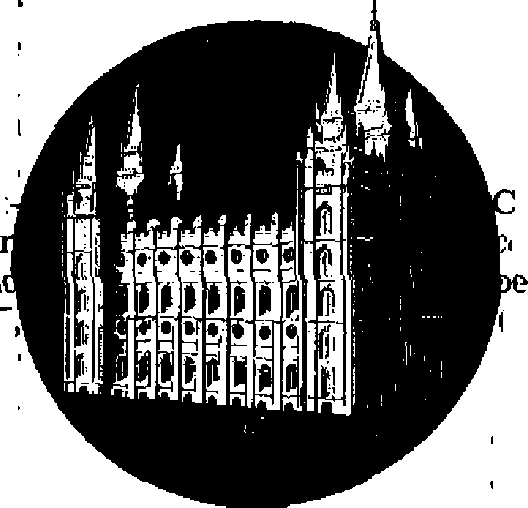
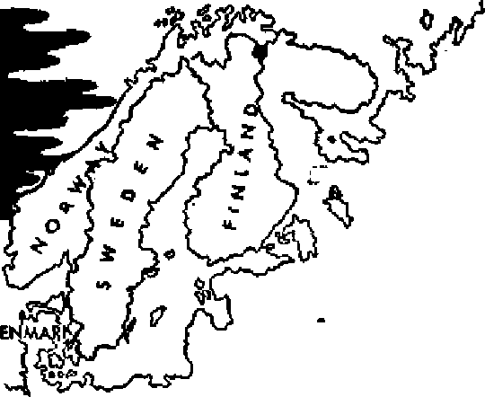

THE MISSION OF THIS JOURNAL.
News sources that are able to keep you awake to the vital issues of our times must be unfettered by censorship and selfish interests. "Awake 1” has no fetters. It recognizes facts, faces facts, is free to publish facts. It is not bound by political ambitions or obligations; if is unhampered by advertisers whose toes must not be trodden on; it is unprejudiced by traditional creeds. This journal keeps itself free that it may speak freely to you. But it does not abuse its freedom. It maintains integrity to truth.
“Awake!1* uses the regular news channels, but is not dependent on them. Its own correspondents are on all continents, in scores of nations. From the four corners of the earth their uncensored, on-the-scenes reports come to you through these columns. This journal’s viewpoint is not narrow, but is international. It is read in many nations, in many languages, by persons of all ages. Through its pages many fields of knowledge pass in review—government, commerce, religion, history, geography* science, social conditions, natural wonders—why, its cover* age is as broad as the earth and as high as the heavens.
"Awake I” pledges itself to righteous principles, to exposing hidden foes and subtle dangers, to championing freedom for all, to comforting mourners and strengthening those disheartened by the failures of a delinquent world, reflecting sure hope for the establishment of a righteous New World.
Get acquainted with “Awake!” Keep awake by reading Awake!”
Published Semimonthly By WATCHTOWER BIBLE AND TRACT SOCIETY, INC. lit Allains Street Brooklyn ], N. T.„ U.S.A.
N. II. Knorr, Grant Suiter, Secretary
Printing this 370,000 Five cents a copy
Lan Jians In which this magazine Is Published: SrrnJmtmthly—Afrikaans EtutiLsh, Finnish. German, Norwegian, Spanish. Momhb'—Panish, French, Greek, I’artuguese, Swedish, Ukrainian.
Offices Yearly subscription Rate
America, U.S., 117 Adams St., Brooklyn 1, N.y. $j.
AutralIt, 11 Broughton Rd., Strathfield, N.R.W, Hs Canthi, 40 Irwin Ave., Terorte 5, Ontario (1 England, 34 Craven Terrace, London. W. 2
South Africa, 623 Boston House, Cape Town 7
entered as second-class mat ter in Brooklyn, N. Y,
Remittances should be sent to office in your country iti compliance with regulations to guarantee safe delivery of money. JieinitUnccE ire accepted at Brooklyn from eountrixrs where no office is located, by international money order only. Bubpnrjption rates in different countries are here stated jn local currency,. Notice of expiration (with renewal hlank) is sent al least two Issues before subscription expires?. Chang* of address when sent to our office may be eipeered effective within me month. Semi ycur old as well as new address.
As of March 3. Printed In U. S.A.
CONTENTS
Why Mechanization Came in Our Day
Golden Rule Blackout—The War
“Voices” of Cheer amid the Blackout
An Independent Country’s Dilemma
Lobsters Like "Home Sweet Home"
Anti-Locust War Hits Religious Opposition 23 ‘We Will Obey Men Rather than God*—The
Viewpoint of Many Persons Today 24
“Your Word Is Truth”
The Reformation in Switzerland
IT IS only a popular game among American school children; but for the nations of the world, the final decision as to which side in the stirring East-West rivalry is telling the truth may make the difference between peace and World War III. The “great debate” has raged back and forth through the iron curtain since the close of World War II in much the same manner in which the game of “Truth or Consequences” is carried on. At the challenge of each side for the truth, the other has retorted with the latest in propaganda.
The Western democracies, as usual, were slow in starting, but finally the “cold war” took on proportions that could not be ignored. High lights were the Berlin blockade and finally the invasion of South Korea. At this latter development it seemed that the East had at last gone too far and would be exposed. However, the incredible Kremlin boldly prated that “black is white”, that South Korea had been the aggressor and that the North Korean communists were simply acting in defense of their borders. U.N. police action in blocking the Red designs on the Korean peninsula was labeled by Russia as U.S. intervention.
At last effective countermeasures were inaugurated by the West, with the aim of deflecting the force of what Warren Austin, U.S. representative on the U.N. Security Council, called the “Big Lie”. In November, 1950, creation of a new $5,000,000,000 world relations department in Washington was advocated by the National Conference on Government. Ultimate aim of such an agency would be to supplement current efforts, such as the radio “Voice of America”, in the fight to outwit Russian propaganda and force the Kremlin to eat the “bitter consequences” of world exposure.
To maintain contentment at home it has been necessary for the Reds to constantly reassure their own people and their satellites of the justice of their cause and the ill lot of the people of the West. The New York Times on December 24, 1950, in an article by Harry Schwartz, outlined some of the frequent fables peddled by Stalin and Company to his loyal followers concerning ‘life In these United States’.
Mr. Schwartz reported that American schools are described to Russians by Izvestia as in a state of conversion to military barracks. Instructors are supposedly directed to note and encourage “the natural desire to fight and kill”. The United States is depicted as crawling with shady businessmen, some of whom stqle a steel bridge in Alabama worth $25,000 and another metal bridge in Montana. Unemployment is said to be so dire in this country that .all of the stores are vacant, that only a fraction of college graduates can find even the most menial form of work, that starvation is everywhere, and that “in Brooklyn, decently dressed Americans came up to
our sailors and begged a penny for food”. This last comment by Pravda will interest American readers who may wonder if the “skid row” citizens that beg along the waterfront were considered “decently dressed” to the Russian sailors. Fashion trends in Russia must be at a low ebb indeed
Violence on mind and body to persons of all ages is also described as an everyday American occurrence. Says the Soviet Radio in Hungarian. “Children are perishing by the tens of thousands, killed by exposure, famine and various diseases/’ Children evading infant death through neglect are tortured mentally by “war games”, films, radio programs and children’s literature, all “used in capitalistic countries to poison the minds of the children”. For the older youth, the horrible slaughterhouse of college football lies in store, in which, says the Soviet Radio, “players are often carried from the football field to the hospital or even straight to the cemetery ...”
Western ideologists are favored in not Jiaving to concoct such fantasies to make reply. Any who have lived or traveled in both the world’s East and West camps know that the latter is standing in defense of an infinitely better way of life for the people. Yet what it offers is far from perfect. Here as in all the world the “critical times” foretold to mark the last days of the old world have arrived. Children have defied parents, to reap a bitter harvest in juvenile delinquency, spurred on and made worse by unparalleled adult delinquency. Children are not being reared in army barracks with primers in one hand, army manuals in the other and a bayonet between the teeth. But then, many child comic books and television and radio shows are far from deserving of an “educational” label. Corrupt businessmen do not walk off with steel bridges, but politicians have been convicted for selling war contracts, padding employee salaries and scooping off the surplus for personal use, etc. The current RFC investigation is not exactly a source of comfort and pride to many political leaders.
More than one world figure has called for a beacon of truth to lead the nations out of the present darkness. Such a beacon now radiates forth from God’s Word the Bible. Long have men of faith looked forward to this day, when the multiplied world turmoil combines with Bible chronology to prove that God’s Messianic kingdom has been firmly established in the hands of his heavenly Son. For this time, Jesus Christ, while the king-elect nineteen centuries ago, foretold to his apostle John the gushing forth of a river of life-giving truth from the throne in heaven. “And on this side of the river and on that side there were trees of life producing twelve crops of fruit, yielding their fruits each month. And the leaves of the trees were for the curing of the nations.”—Revelation 22:2, New World Trans.
Familiar to more than 100 nations of earth today is*the work of Jehovah’s witnesses, Christian ministers, busily engaged for many years now in proclaiming the ‘good news of the Kingdom in all the inhabited earth*. Like the leaves of the trees of cure bordering the river of truth have they been. What a relief their work when compared with the often ruthless propaganda war carried on by those forced to defend against conquest-mad men who would run over the nations and peoples. Leaning neither East nor West, these ministers of God can with good conscience hold out for God’s kingdom by Christ as the only thoroughly reliable hope capable of quelling al] strife, stamping out all delinquency, restoring peace, order and life and commanding the respect of all, East and West, who will win from the great Life-giver everlasting happiness.
THE twentieth-century world is openly immoral. It is immoral in its politics, business dealings, human relations and sex standards* In the nineteenth century the word “immorality^ nearly always meant sexual irregularity, but “moral, according to Funk and Wagnalls' New Standard Dictionary‘Of or pertaining to the practices, conductTand spirit of men toward God, themselves, and their fellow men, with reference to right and wrong and to obligation to duty; pertaining to rightness and o lightness in conduct... conducting oneself or conducted wiTh propriety in gexual relations ,. . capable of understand-1 ing> tbg difference j
■jwfct Uu-Lic4 * f
In recent articles we have pointed to the moral collapse in politics, government, the theater and literature, and it has been shown that this collapse began with the end of the Bible’s “Gentile times’1 in 1914. We have pointed to this many times in the past, but in this series we have shown that persons who have no appreciation of the Biblical importance of the year 1914 have likewise recognized that it is since the outbreak of World War I that the world has lost sight of moral values that had, at least to some degree, been upheld by ^so-called “Christian” nations until then.
The book Sex in Our Changing World, by John McPartland, says, on page 12, concerning the morals of the children who were growing up in 1914: “These children were not going to gradually accept their parents* beliefs and manners, these children were to grow up in a new kind of world.” It was at the end of World War I that the conservative London Times first mentioned venereal disease, marking a letdown in the taboos against discussing such subjects publicly. When sex ceased to be a closed subject it went to the other extreme and among many became a major topic for conversation. The point was reached where, although sex was frequently discussed, the person who talked about God was often ridiculed. Many persons became ashamed to discuss God or the Bible, but only too anxious to discuss sex. The book Morals Since 1900 says, on page 96, that during the past fifty years sex morality has declined “to being regarded as little more than crabbed prejudice, as ignorant, cruel, and indeed as unhealthy as any other savage superstition”.
What caused the sudden change? Perhaps it was aided by the advent of Freud’s theory and the development of psychoanalysis that occurred just at the right time to help turn the tables on .the moralist right at the end of the “Gentile times’*. The moralist who desired to follow Biblical instruction was accused of being an unnatural pervert. Physicians gradually began to question the Bible's view of sex.
Conditions have so developed that today prostitution is rampant. It has existed in the past, yes, but today a large enough percentage of the population’s morals has collapsed that immoralily receives a more or less popular approval. The New York Daily News, March 31,1951, reported that* prostitution “appears to oe entrenched as a permanent institution in Spain”, where* there are at least 25 well-known, government-approved brothels in Madrid, and even more than that in Barcelona. The New York Daily Compass reported on Oc4 itober 7f 1949, that in Paris before the wartime it was estimated that there were 20,000 prostitutes, while in 1949 the guesses .seemed to average about 100,000. Does that not Indicate a moral breakdown? A German survey similar to the U. S. Kinsey report said that ‘'eighty-nine per cent of the men and 70 per cent of the women had sexual relations before marriage”. (Washington, D, C., Times-Herald, March 16, 1950) In the United States the notorious Kinsey report indicated that over 73 per cent of American males have premarital intercourse by the time they are 20. The book Psychological Factors in Marital Happiness, by Dr. L. M. Terman, reports that before the first world war 12 per cent of American women were not virgins at marriage and that by 1932-37 the figure had jumped to 68 per cent. Probably some of these figures are inflated. Many moral persons refuse to participate in such surveys, and therefore it has been suggested that these figures give a one-sided picture; but the comparison of present statistics with those before World War I proves unquestionably that there has been a tremendous collapse in morals since that war started, since the “Gentile times” ended. Some looseness is expected in wartime, but the outstanding thing about World War I’s immorality is that the situation never went back to normal, but has continued to worsen right down to this very day.
Concerning the moral breakdown around army camps during World War n the book
Sex in Our Changing World (page 69) paints the following sordid picture. It says that twelve- and thirteen-year-old girls "sometimes got in a frenzy of anxiety for the adulation and romance their older sisters were enjoying. Rouged and fancy, these children would steal away from their homes every evening, head for Main Street and adventure. A lot of men played rough games with 12-year-old girls in the belief they were adult women”. And yet two pages later it says, “This much can be said of the morals of the army towns: they were better than those of the boom war plant torn, and better than those of the occupation towns a few years later.”
But what about frequent divorce, which many times amounts to mere legal prostitution, wife-swapping and immorality? What about the continual swapping of marriage partners without Scriptural grounds to do so which makes the individ ual guilty of continued adultery and polygamy in God’s sight? Frequent divorce all too often just salves the consciences of those who want to be legally moral, but with little or no concern for God’s righteous laws. But the moral laws are not made by the state, they were made by God. They are not recorded in the Jawbooks which can be changed, but they are recorded in the Bible. Violation of God’s laws concerning marriage through all-too-easy divorces on unscriptural grounds does not make the swapping of marriage partners either proper or moral.
Here is a look at statistics regarding divorce compiled for the Annals of the American Academy of Political and Social Science (November, 1950). They show that the divorce rate for England and Wales stood at an almost stationary 600 per year from 1900 to 1913, but then that divorces rose to 5,000 a year in 1937 and then "multiplied by ten in ten years”! This publication then says: “Indeed the trend has gone so far in the other direction that in many circles the partner who refused to give the other his or her 'freedom* is regarded as somewhat churlish and unchivalrous/* It reports, on page 191, that “the divorce rate in Sweden has increased by 1,000 per cent in the past half century”. It reports, on pages 15 and 16, that in the United States “the average number of divorces per 100 marriages was 5.56 during the 1881-90 decade and 25.89 in the 1940-49 decade, representing an increase of 466 per cent”. It then shows, on page 18, the three-year average divorce rate from 1910 tQ 1912 and gives the percentage of increase between then and the years of 1945 to 1947. It lists the increase in divorce since those pre-World-War-I years for England and Wales as 3,867 per cent; for Scotland, 691 per cent; for Belgium, 301 per cent; Sweden, 481 per cent; the Netherlands, 378 per cent;New Zealand, 489 per cent; Denmark, 391 per cent; France, 225 per cent; Switzerland, 108 per cent; U S., 221. per cent; and Japan, for which the figures were incomplete and the only “pagan” country involved, was the only land with less divorce, and there the decrease was only 7 per cent. Can anyone face these facts and say that morals are improving?
Loose divorce laws are even more loosely applied and lyingly used by men and women who perjure themselves to become legally free from their mates. One judge said: “The fact is that in ninety to ninety-five per cent of the cases I sense collusion and some perjury involved.”
But it is not the loose divorce laws that are the most shameful, nor the high divorce rate. It is the fact that morals have so broken down that faithfulness, love, and a serious appreciation for the divine institution of marriage have often disappeared completely. True, the moral codes of the past may not always have been followed. Lying, adultery, rape, perverted minds and dishonesty have always existed; but do not these things multiply tfhen there is less objection to them? It was in the past considered a shameful thing to be guilty of immorality. Now in some circles it is considered shameful to be clean and moral and to follow right principles. Because a few motorists speed should the speed laws be abolished? Will not more of the motorists drive at a reasonable speed as long as the law is in effect than if they are told to “go the limit”? Will not youth be more , moral with strong moral codes in effect than with Kinsey reports, novels, and many other means of propaganda telling youth by implication that “everybody's doing it, so why don't you?” The most shameful thing about the moral degeneracy of the twentieth century is that it is accepted, approved and sometimes even praised.
Yet this moral degeneracy was foretold in the Bible at Matthew 24 and 2 Timothy 3. Such conditions of immorality will not long continue. Their multiplying since 1914 marks the end of the "Gentile times”, which Bible chronology proves occurred in the fall of that year, and that occurrence marks the establishment of God's righteous kingdom. That kingdom has been established in heaven. Its establishment, according to Revelation 12:10-12, would be marked by a time of great woe.
These woeful conditions foretell that soon Satan's entire corrupt system of things will be ended and righteous conditions of lasting peace will result. All who are permitted to live on the earth under the blessings of that kingdom will be the ones who have proved that they will live morally and obey God's righteous instructions.
MANY people are satisfied to let conditions ride. They lived yesterday, they live today, and they hope to live tomorrow. Conditions change from year to year, even from day to day, but they take for granted that things have for all eternity been more or less as they are at present. Not so, however.
Something entirely new has come about in this century, bringing conditions worse than ever before imagined. Communication, transportation and destruction have, within the lifetime of many persons today, grown all out of proportion to former limitations. For hundreds, yes, thousands of years, the earth has continued in much the same pattern. The sailing ship, used since ancient times, was gradually replaced by the steamship. Communication was by messenger and depended on horses, wagons and oxcarts as it had for centuries. The sword and bow gradually gave way to the gun.
These changes were slow and took a long time, but the stage was being set. With the twentieth century things swung suddenly into high gear. The machine gun had been invented, Early airplanes were tested. The submarine was being perfected. Steel-hulled steamships were being built. The machine age was under way.
In 1914 the dam broke. This flood of new equipment was directed toward destruction of life and property. The machine gun seemed to clinch the argument that through the advance of weapons war had brought itself to a standstill. But then with a mechanized mobile fort, the army tank, war took on a never-beforeknown destructiveness. Armies discarded their old violent war-modifying conventions, threw chivalry out the window, used the newly developed airplane to attack the enemy's supplies and factories. The civilian’s ''immunity” from warfare that the professional army had established was gone. Bombing was to "short en war and save lives*’, but instead it brought destruction entirely outside the realm of previous imagination. All this occurred for the first time during World War I.
The result? World War I was more destructive than the 901 major wars of the past 2,400 years, seven times more destructive than all of them combined! World War II was four times worse than that! The -cause? Modern mechanization!
Modern developments have aided man to get into more difficulty with less effort than ever before. Modern communication and equipment have encouraged big government, big business and big enterprises. As long as government was small, taking say 10 per cent of the total income in taxes, corruption was not so serious, but as it gets larger, taking more of the taxpayer’s money, then the waste becomes very serious. Modern wire services and telephone communication enable illegal gamblers to expand their corrupt empires to sizes never before dreamed of, and through their bigness to exercise even more influence on corrupt politicians. Even much of the breakdown in family life, so evident today, has resulted from convenient modern transportation and interests outside the home.
Why did these conditions come just now? Why not 500 years ago, or sometime in the future? Why has today’s world suddenly surged forward, all out of proportion with former development? These things came right at the end of the Gentile times, in 1914, when Christ’s prophecy concerning nation rising against nation and kingdom against kingdom in total war was to be fulfilled, and when Satan would be wrathfully bringing woe to the earth because his own destruction approaches. (Matthew 24:7; Revelation 12:12) Despite all its conveniences, modern mechanization has contributed greatly to this world's woes, and in the year the Gentile times ended it was developed to the point that all this new equipment could be thrown into World War I. A kind of war the world had never before seen. A war sufficiently outstanding to fit into the sign Jesus foretold nearly 2,000 years in advance concerning his second presence. The outstanding and continuing development of this equipment for destruction today corroborates the fact that we are now living at the end of this present wicked system, when Satan shows his wrath, and that soon righteous conditions of lasting peace will prevail under the blessings of God’s kingdom. Lift up your heads and rejoice, for present conditions indicate that the blessings of the Kingdom are at the door!
T4E “golden rule*’ appeals to this world as better material for political speeches than for living habits. Certainly no principle could be repeated more or practiced less- In the battle for the soil, man robs and kills his neighbor in “shooting war". In the battle for the mind, he fills him with hatred and fear during “cold war”.
From his beginning it was evident that man was not to live cowering like an ani-TTia'i, yet fear was stomte vsr
similar catastrophe. Men were to live together in peace and harmony. This was illustrated in man’s first human associate, the wife Eve, who was given as a helpmate and companion, not as a natural enemy. In the mandate from his Creator the first man heard nothing of conquest of the planet through war. But peaceful expansion and settlement would depend on mutual love of God and neighbor. How different from the world of today and the qualities that catch on with itl
Bertrand Russell said of today’s world, in the New York Times magazine on January 21, 1951: “The feelings that have the strongest contagious quality are fear and hate—especially hate based on fear.” In this regard, Archibald MacLeish, former assistant secretary of state, declared that this country was destroying itself through its hatred and fear of Russia. Going further, MacLeish said: “Never in the history of the world was one people as completely dominated, intellectually and morally, by another people as the people of the United States by the people of Russia in the four years from 1946 through 1949. American foreign policy was a mirror image of Russian foreign policy; whatever the Russians did, we did in reverse. American domestic politics were conducted under a kind of upside-down Russian veto; no man could be elected to public office unless he was on record as detesting the Russians,"
“Beef1 Turns
But apparently the democracies have had their influence on the Soviet as well. In the stress of the “cold war” of flaming hot words, Stalin has dolled up his burly Russian bear in a dainty skirt and crowned it with imitation yellow curls. Now, behold! In the modem version of the old nurs
ery rhyme, the bear plays “Goldilocks”! Russian propaganda paints the Reds as democratic, defensive peacemakers. On they foam: North Korea and Red China are assaulted by capitalistic aggressors. Red dictatorships are “pure democracies” with “people’s armies’In the meantime, the West, suspicious of the muscular, woolly “Goldilocks”, proceeds to arm to the teeth just in case she forgets herself. So both sides talk peace and prepare war. What now will be the West’s course for the future? On March 19, this year, the New York Times quoted Major General William J. Donovan, wartime director of the office of Strategic Services, who urged increased psychological warfare, saying:
"Stalin might be deterred [from war] by the fear that he cannot determine in advance the loyalty of his own people. For no dictator dare move if uncertain of his safety at home. Our greatest ally therefore Can be the Russian people.”
Thus, fear is advocated to fight fear. In a weird boomerang, one of the vaunted four freedoms for which the last major war was fought was to be “freedom from fear”. Now the very powers which coined that catchy phrase and fought under its banner are not only enslaved by fear themselves, but find it necessary to employ it as a weapon against their new foes.
Another alarm sounds. Recall that fear does not ride alone. Its bed partner is hate, and their joint song a deadly duet. Another urge for more steam in the propaganda offensive was voiced by Edward W. Barrett, assistant secretary of state. He told a Congressional group, as reported by the New York Times March 20, 1951, that Russia and her associates were outspending the West by five to one for propaganda warfare, which he referred to as their “Hate America” campaigns. Calling a spade a spade then, his recommendations amount to asking for Americans to increase the “Hate Russia” drive. Overlooking the matter of politics for the moment, visualize what an all-out, stepped-up war of hate will mean in due time. Regardless of right or wrong, men were not meant to so Jive.
In the meantime President Truman has asked an additional $97,000,000 for one of the West’s principal weapons in the “war of ideas’*, the “Voice of America” radio. This channel reaches an unknown num her of Russians who risk imprisonment to hear “Voice” programs that dodge Russian “jams” set up to interfere. Just so does each side pour increasing sums of money, time, effort and energy into its verbal offensive. In the end, have the people been edified? Have they increased their capacities for love and their appetites for peace? Since the inception of the “cold war” have the Russian, his satellites, the American and the West European learned greater understanding and sympathy and practiced more mercy toward one another?
What then is man to do? First, it would be well to remember that, at least when it suits their purpose to do so, ’world dignitaries remind us that this is a Christian civilization. Yes, doubters might recall that even Russian believers celebrate “Christ’s birthday”, Of course, their January date for it is wrong, but, then, neither was he born on December 25! How reasonable then it would be to behave in a Christian manner! Scoffers immediately will reply, ‘tell that to the Russians.’ However, were Christ on earth would he tell it only to the Russians? Would he excuse one violation of his principles simply because a more flagrant one existed? Let him answer for himself:
“You heard that it was said.' ‘You must love your neighbor and hate your enemy? However, 1 say to you: Continue to love your enemies and to pray for those persecuting you; that you may prove yourselves sons of your Father who is in the heavens, since he makes his sun rise upon wicked people and good and makes it rain upon righteous people and unrighteous. For if you love those loving you, what reward do you have? are not also the tax collectors doing the same thing? And if you greet your brothers only, what extraordinary thing are you doing? Are not also the people of the nations doing the same thing? You must accordingly be complete, as your heavenly Father is complete.” —Matthew 5:43-48, New World Trans,
Do you still contend that this is a Christian world, even part of it? Then it is bound by these principles in the sight of God. Do you concede, then, that it is not Christian? Then you may suddenly feel that much confusion of mind has been cleared away. But has God, then, forgotten the world? Not at all. His Son, Christ Jesus, who gave us the Christian code of living, predicted for the last days of this old “system of things” a world-wide educational campaign concerning the establishment of his kingdom in heaven, (Matthew 24:14) No propaganda cascade this, but the truth.
“PTvcztf” of Cheer amid the Blackout
What a “voice” these faithful Kingdom witnesses have today! During 1950 it was heard in 115 countries, bringing hope and cheer. In August, last year, representatives of some seventy of these politically hostile nations came peacefully together in New York’s Yankee Stadium through the eight-day international assembly of Jehovah’s witnesses. Peak attendance was reached on the closing day when 123,707 heard the public lecture. The assembly was an example of Christian love among the delegates and toward those with whom they associated. The Christian standard is not impractical. It can be done!
Ironically, the one fear that men should possess they do not have. This is the “fear of the Lord”, for such is the beginning of wisdom. (Psalm 111:10) The flood of Noah’s day was forgotten by apostates from the faith after the waters dried from the earth or passed into the ocean beds. Fear of what the F/ood pictured, Armageddon, the ’battle of the great day of God
Almighty1, is unknown or scoffed at by men today. The Christian Century magazine of January 9,1946, remarked interestingly that "a cataclysmic Armageddon” was one of the fears from which “intellectuals were the first to be emancipated”.
So true! The “intellectuals” of this world and their hangers-on have become “emancipated” from the fear of God, and fear instead the arm of flesh of puny man, Thus they jump at the slightest mention of atomic energy and shrink from every blaring headline. They are not emancipated from fear itself, but enslaved to it. But today a “great voice” from God’s Word is gathering God-fearing individuals to a position of refuge against the storm of the Armageddon men tag with the myth label.
The sound of this “voice” in its countless visits to private homes with the Bible message of comfort, in its Christian assemblies for localities, for nations and internationally, its radio broadcasting, magazine publishing, distribution of printed bound books and booklets—all this and more, shows how practical is the demonstration of Christian love today. Teaching the fear of God, this love conquers fear of man. It can do more than that. It can lead its adherents straight through the collapse of this old world when its hate campaigns explode it at the seams and into the glorious new world of God’s promise. Then God’s matchless “voice” will speak to them and say:
“Look! the tent of God is with humankind, and he will reside with them, and they will be his peoples. And God himself will be with them. And he will wipe out every tear from their eyes, and death will be no more, neither will mourning nor outcry nor pain be any more. The former things [which things prospered through the spread of fear and hate] have passed away.”—Revelation 21:3, 4, New World Trans.
440 OME revelations are of God, some O revelations are of men, and some revelations are of the Devil.” So stated the founder and originator of one of America's two hundred and sixty-five religions, Joseph Smith, first president of the Mormon religion, sometimes known as the Latter-Day Saints. The purpose of this article is not to discuss the history of such organization, but rather to point out the fundamental doctrines taught by Mormonism. This is in the interest of honest Mormons, as well as others coming in contact with llormonism, because by a comparison of the Bible with Mormon tenets the sincere seeker of truth may readily ascertain whether Joseph Smith did receive his ‘revelations* from God or from Satan the Devil, that subtle transformed angel of light.
Most people associate Mormonism with the Book of Mormon. Nearly all its missionaries hand the prospective convert a card containing the “Articles of Faith’* and the Book of Mormon. Neither of these actually contains the ‘revelations’ of Smith. In fact, the basic and fundamental teachings of Mormonism are not found in the Book of Mormon or the “Articles of Faith”, and here is where the real deception is practiced. Few people, generally speaking, including Mormons, have actually read the more doctrinal works, such as the Journal of Discourses and Doctrines and Covenants which contain the ‘revelations’ of the church’s many presidents, or the many sermons and explanations and interpretations of their so-called apostles and priests. These 'visions* form the basic doctrines of Mormonism, and their study is not encouraged for the believers in general because of their glaring contradictions to the Word of God, the Bible.
However, we take the liberty to refer to these publications so that the honest reader in comparing them with the sacred Scriptures may clearly see and be able to avoid the Mormon labyrinth. The following quotations set forth the teachings of the Mormon religion on seven important doctrines. The quotations are from their own recognized authorities.
(1) God; Mormonism teaches that there are many gods, that each one is polygamous, has procreative powers like man, brings forth sons and daughters and that men may become gods. “Are there more Gods than one? Yes, many?’ (Catechism, p. 13) “And you have got to learn how to become Gods yourselves, the same as all Gods have done before you.” (Joseph Smith, Journal of Discourses, VI, 4; Comp. 283) “In heaven where our spirits were born there are many Gods, each of whom has his own wife, or wives, which were given to him, previous to his redemption while yet in his mortal state.** (The Seer, Vol. I, Apostle Orson Pratt) Again Joseph Smith: “In the beginning, the head of the Gods called a council of the Gods, and they came together and concocted a plan to create the world and people it.” (Journal of Discourses, Vol. VI) “Each God, through his wife or wives, raises up a numerous family of sons and daughters.” (The Seer, I; 37) Now how do you like that? Shocking? It would seem so to any rational individual. Only the Devil ever promised man that he could be 'like the gods’. (Genesis 3:1-5) (See also Isaiah 44:6; 45:5; Hosea 11:9; 1 Chronicles 16:26.)
(2) Adam: Mormonism teaches that Adam was God in heaven, that he came to earth with one of his celestial wives, that he is actually Michael the archangel, that ho is really our God, and the father of Jesus Christ. Listen: “Now hear it, O inhabitant of the earth, when our Father Adam came into the Garden of Eden, he came into it with a celestial body and brought Eve, one of his wives, with him. He is our Father and our God and the only God with whom we have to do.” (Brigham Young Sermon, Mill. Star, Vol. 15, pp. 769, 1853) Kind, Brigham Young is a Mormon ‘saint*, one of their noteworthy presidents! Have we misunderstood or misinterpreted the above? Listen to their interpretation, then: “In the light of this new revelation we must believe that Adam is our Father and our, God, and that He also was the lit eral Father of Jesus, the So of Mary, both spirit an body.” (Truth, Vol. 15, No. 10, 1950) “Jesus, our elder brother, was begotten in the flesh by the same character that was in the Garden of Eden, and who is our Father in heaven. When the Virgin Mary conceived the child Jesus, the Father had begotten him in his own likeness. He was not begotten by the Holy Ghost. And who is the Father? He is the first of the human family.”—Journal of Discourses, 4:217-218.
(Truth
there is but one God
pertains to this earth—the first man Adam. The first man sent His own son Jesus hrist.” (Journal of Dis
Much more can be cited from the inner-circle Mormon publications, but the above will suffice to manifest a most blasphemous, ridiculous, demon-inspired revelation. You can now see why the Bible is quite unpopular among Mormon leaders, as we shall show later. Adam died a wicked, rebellious sinner. Only the Devil would teach that a rebel may become a god.
(3) Jesus: Mormonism teaches that Jesus was begotten by Adam, not by holy spirit, that he was a polygamist with many wives, that he had children, and that he was hated for this reason. Here is what one of their 'twelve apostles* said: "I discover that some of the eastern papers represent me as a great blasphemer, because I said, in my lecture on Marriage, at our last conference that Jesus Christ was married at Cana of Galilee, that Mary, Martha, and others were his wives> and that he begat children/* (Apostle Orson Hyde, Journal of Discourses, Vol. II: 210) “The Lord told me that Jesus was the Son of Adam.**
March, 1950, p. 273) “I have learned by experience that
that
ourses, 4:1) “He was not gotten by the Holy Ghost?' (Brigham Young, Journal of Discourses, 1:50) “A belief in the plurality of wives caused the persecution of Jesus and his followers.” (Apostle J. M. Grant, Journal of Discourses, 1:345-6) “If at the marriage at Cana of Galilee, Jesus was the bridegroom and took unto him Mary, Martha and the other Mary, whom Jesus loved, it shocks not our nerves if there was not an attachment and familiarity between our saviour and these women highly improper, only in the relation of husband and wife,”—Apostle O. Hyde, Sermon, Beadle, p, 304,
When a bunch of adulterers seek justification of their lustful course by dragging the name of the Son of God into disrepute, they become most responsible, and so do their followers. To many of them the above quotations will be shocking. Any simple reader of the Scriptures knows that there is not the faintest shred of Bible evidence showing Jesus even married once, much less many times. On the contrary, it does show he never did marry.
(4) Polygamy: Mormonism teaches plural marriages or polygamy among men and gods, that such “is a means of grace” and that any Bible testimony contrary thereto is a mistranslation. Let’s start with the heavens first: “The Gods, who dwell in the heavens from which our spirits came, are beings, who have been redeemed from the grave with their wives, are immortal and eternal, and will die no more, but they and their wives will be supremely happy. All the endearing ties of conjugal love, which existed in their bosoms when terrestrial and fallen beings, are now greatly increased and perfected.” (Apostle Pratt, The Seer, Vol. I, II, pp. 2323; Vol. 3, p, 27) Do not cite now Matthew 22:23-33 where Jesus says there is no marriage in the spirit world, because Mormonism will retort that 'that’s a mistranslation’. How about this: “We have now seen that God the Father has a plurality of wives.”—Pratt, The Seer, Vol, I, No. 11, pp. 172-73. '
Now let us get down to earth about polygamy. In the Mormon book, Doctrines and Covenants, Sec, 132, is found the vision of Joseph Smith commanding polygamy. Bishop R. C. Evans, holding at one time the highest position possible in the Mormon church, stated in his book Forty Years in the Mormon Church, page 46, the following respecting Smith’s polygamy vision: “It contains 66 paragraphs and covers 10 pages, tetiing aW about how to practice polygamy and concubinage, and states that a man is not guilty of adultery even if he have 10 women at one time as his wives, and let the reader remember that in the revelation, several times over, damnation is promised to those who refuse to enter into polygamy, and the highest glory is only secured by the practice of polygamy.” This man should know, as he spent 42 years in such sex system.
Though Mormons say such practice has been dropped, yet quite inconsistently they maintain that the polygamy vision recorded in Doctrines and Covenants is genuine and proof that Smith was inspired. Some counteract by saying that David, Solomon, Abraham and others had more than one wife.
However, their own Book of Mormon, Jacob 2:23-28, says such reference is only an excuse for whoredom: “But the word of God burdens me because of your grosser crimes. For behold, thus saith the Lord: This people begin to wax in iniquity; they understand not the scriptures, for they seek to excuse themselves in committing whoredoms, because of the things which were written concerning David, and Solomon his son. Behold David and Solomon truly had many wives and concubines, which thing was abominable before me, saith the Lord. . . . Wherefore, I the Lord God will not suffer that this people shall do like unto them of old. Wherefore, my brethren, hear me, and hearken to the word, of the Lord: For there shall not any man among you have save it be one wife; and concubines he shall have none; for I, the Lord God, delight in the chastity of women.”
The Book of Mormon, however, is not at all necessary to set forth the Christian concept of marriage, Jesus, Paul and others made that very plain in any translation. (See Matthew 19:3-12; 1 Corinthians 7; 1 Timothy 3:1-5.)
(5) Priesthood: Mormonism teaches two priesthoods in effect toward Christians, the Aaronic and the Melchisedec, to which they profess to belong, and through which salvation must come. “There are in the church two priesthoods, namely, the Melchizedec and the Aaronic.’9 (Doctrines and Covenants, 104:1-8) “Respecting the Melchizedec priesthood, the sectarian world never professed to have it, consequently they could never save anyone, and would all be damned together.” (Joseph Smith, Mill, Star, Vol. 22, p. 54) The only way Mormons can believe that is to resort to ‘modern day revelation* and to completely reject the Word of God^ since the Bible is very clear that the Aaronic priesthood was typical and came to an end by Jesus’ fulfilling the Law, while on the other hand, only one could ever be a priest ‘after the order of Melchizedec’. That one is Jesus Christ, the nevermore dying, immortal King. (See Hebrews 5:1-10; Hebrews 7.) Salvation is not from priestcraft but is a gift from God through His lifedispensing high priest, Christ Jesus.
Tithing; Mormonism misapplies texts from the Bible, which Bible they say is not fa safe guide’, to teach an oppressive, money-grabbing tithing system to such selfish extremes that even a most needy member is refused material support if his tithing has not been paid. 4‘It is a day for the tithing of my people; for he that is tithed shall not be burned at my coming.” (Doctrines and Covenants, 64:23; 119) Sounds like the old purgatory, racket, does it Ttotl “ A record xs 'being ul Tbl people who are not tithe payers, so that it might be known who are faithful and who are not.” (Apostle R. Clawson, D. News, Apr. 1900) Speaking of the tithing records in his office, President Bishop Preston said “that we should be judged out of the books and that all would be judged according to their works”.—News Report, May 30, 1898.
Mormonism knows that it has to refer to their so-called visions regarding tithing. Not a single text in the Christian Greek Scriptures commands a Christian to pay tithes. Those in the Hebrew Scriptures, like Malachi, chapter 3, are directed to fleshly Israel, who had the obligation of supporting the tribe of Levi, which had no earthly inheritance. Mormons or others who use such texts as an excuse for fleecing their parishioners of material riches are working a heartless racket in God’s name and are certain of His condemnation.
(7) Bible; Mormonism, like the Pharisees of old, makes the Word of God of none effect by its traditions and so-called revelations. Not many of its adherents actually know anything about the Bible, and on talking to them most will answer that the Bible is a thing of the past and that now the ‘saints’ have visions to supplant the Scriptures. When shown the glaring contradictions between the Bible and Mormonism, Vne patented reply is swe 'believe the Bible where it is translated correctly’; meaning, of course, that they reject all that contradicts Smith’s teachings.
Listen to recognized Mormon authorities as to their esteem of the Bible: “If it be admitted that the apostles and evangelists did write the books of the New Testament, that does not prove of itself that they were divinely inspired at the time they wrote. . . , Add all this imperfection to the un-certaTtfiy ot the translation, and who In his right mind could for one moment sup-
pose the Bible in its present form to be a perfect guide? Who knows that even one verse of the whole Bible has escaped pollution, so as to convey the same sense now that it did in the original?” (Apostle Orson Pratt, Divine Authority of the Book of Mormon) Mormonism teaches sixteen books are missing from the Bible. (7n-striKtor, p. 182) One who really adheres to the Bible is ridiculed. Note: “Thou fool, that shall say, a Bible, a Bible, we have got a Bible, and we need no more Bible. . . . ye need not suppose that it contains all my words?’—Book of Mormon, 2 Nephi 29:6-10.
The Mormon attitude toward the Scriptures may be seen in the following quotations: “Wilford Woodruff is a prophet, and I know that he has a great many prophets around him, and he can make scriptures as good as there is in the Bible.” (Apostle J. W. Taylor, Conference, Salt Lake City, April 5, 1897) “The living oracles [Mormon visions] are worth more to the Latter-Day Saints than all the Bibles, etc.” (Apostle M. W. Merrill, Conference, Salt Lake City, Oct., 1897) “Compared with the living oracles [Mormon revelations] these books [of the Bible] are nothing to me.” (President Wilford Woodruff, same conference) Can you imagine the head of a religious organization making statements like the foregoing and yet pretending before the outsiders that Mormonism is based on the Bible? It is not only a case of the blind leading the blind, but one that proves the woeful results of hypocritical religious leaders giving in to the seducing demonic spirits now leading the world on to Armageddon.
In the case of Mormonism, as well as others who have laid aside God’s Word for the visions, revelations, traditions and precepts of men, it has produced a worldly religious system, spotted in rotten poiit-ical, commercial and military affairs, greedy for the material gain of its members, and with the stain of illegitimacy on 70 per cent of its members. Perhaps Brigham Young himself most aptly sums up this point: ”1 have many a time, in this stand, dared the world to produce as mean devils as we can. We can beat them at anything. We have the greatest and smoothest liars in the world, the cunningest and most adroit thieves, and any other shade of character that you can mention. We can pick out elders in Israel right here who can beat the world at gambling; we can handle the cards; can cut and shuffle them with the smartest rogue on God’s footstool. I can produce elders here who can shave their smartest shavers, and take their money from them. We can beat the world at any game.”—Des. News, Vol. 6, p. 291; Journal of Discourses, IV, p. 77
You have never read in the Sacred Scriptures where Christ Jesus said anything like the above. He commanded complete separateness from this ungodly world and all its elements. He especially warned of the danger in following blind leadei's. Jesus loved his followers and in their highest interest he admonished them to continue in his word to be his disciples and they would learn the truth this way and the truth would make them free from religious entanglements. That is the only way to escape from Mormonism’s religious labyrinth.—Contributed.
By “Awoke!'* correspondent in Southern Rhodetia
WHY are all those people listening so intently to that radio? Is it a speech from the throne? No, not that. Then is it news of victory for the United Nations forces in Korea? No, nothing so tame as that Then what is it? Why, it’s the draw for the sixty-first Southern Rhodesia state lottery’
It can be safely said without stretching the point too far that the draw for these lotteries is one of the most important events, if not the most important event, in the public life of Southern Rhodesia. In 1934 the matter of a government-sponsored state lottery was put to a vote and out of a 54,440 European population 20,550 cast their votes. Of this number 16,946 voted for lotteries and 3,604 voted against. Since that time the project has enjoyed ever-increasing popularity.
Was it not Major Bowes who used to say each week on his Amateur Hour, “Round and round she goes and where she stops nobody knows," in referring to the wheel of fortune? Well, Southern Rhodesia has six wheels of fortune in the form of six large metal drums or cages used for the lottery draw. These contain small red rubber balls about three inches in diameter. The balls of the first two cages have letters on them and those of the remaining four cages are numbered. In the sixty-first lottery, December 19-21, 1950, there were eight balls in each of the first two cages, A-H, and 10 balls in each of the remaining cages, numbering 0-9.
The draw is conducted under the supervision of the minister of finance and during the draw the cages are attended by seven
men, one for each cage and one for the operating of the mechanical works. The cages are built in two sections, and when a lever is pulled these sections in all six cages (which are spinning rapidly all the time) separate simultaneously, making enough room for one ball in each cage to drop into a little trap at the bottom. When the sections close again the ball rolls down a chute to where it is picked up by the attendant. Each attendant then holds a card up showing the letter or number of the ball and thus a winning number is produced, The result would read something like this: EC3292. The holder of that ticket is immediately sent an airmail letter giving him instructions regarding the collecting of the prize. No names of the prize winners are divulged. Rather they are given fictitious names to protect them from possible encroachers.
The state lotteries hall is a beautiful, spacious building, centrally located. When the draws occur (four times every year) this hall is generally packed full and loudspeakers outside announce the results to multitudes more. And, of course, the radio carries the draw into every home. While the draw for the main prizes is taking place everything else seems to be temporarily suspended. If you knock at some-
one’s door and you do not get an answer, it is because they are all too absorbed in the results announced over the radio to hear you. If you are visiting someone and they begin to get fidgety it is because there are only a few minutes left before the draw.
As to the prizes, the first prize is 10,000 pounds ($28,000). The number of first prizes, or all prizes for that matter, depends upon the number of tickets sold. In the last lottery there were 583,325 tickets sold. There is no need to go into the technical details as to how they arrive at the number of prizes. Suffice it to say that for this number of tickets there were seven prizes of £10,000 each, seven of £5,000 each, seven of £2,000 and 1,138 prizes of diminishing denominations. The majority of these prizes go to the Union of South Africa, but this does not at all mean the Union is the only outside country to support the lotteries. Prizes go to all South and Central African countries, England, Scotland, and other countries.
But do not conclude from this that all the lottery returns go into prizes. In fact, the very purpose of the institution of the state lotteries was “to provide funds for social service, public welfare and relief of distress within the Colony”. And, in the words of the director of state lotteries, “The trustees have interpreted this to mean without regard as to race, color or creed/’ So even the natives, who are not allowed to buy tickets, receive many benefits. The total amount taken in since 1935 is £7,722,990 ($21,624,372 at present values). Of this amount 70 per cent has gone to prizes, about 12½ per cent to expenses and about 17½ per cent to charitable and social objects. This latter amounts to £1,351,523, 5 shillings, or $3,784,265.10. Although the lotteries are conducted under the supervision of the minister of finance, still the government receives no portion of the proceeds. However, it has been a great source of assistance to the government, in view of its widespread charitable and welfare assistance.
Sports, recreation, hospitals, schools, individuals, all come under the assistance of the lotteries. Typical is the following news item taken from the Rhodesia Herald, March 2, 1951, which reads:
“At a recent meeting of the State Lottery Trustees a grant of £3,000 was made to the Coghlan School, Bulawayo, for a Children’s Centre and £2,500 to the Winifred''Tuniner Hostel, Gwelo, for building extensions. The Fairbridge Memorial College received £500 and the Lomagundi Football Club £250. Grants of £50 each were made to the Bindura Hospital and the Gwelo Hospital for patients’ comforts and £250 for the provision of training in tuberculosis treatment. The trustees also authorized the provision of oxygen tents for children’s wards at Salisbury and Bulawayo hospitals. Improvements to the Trustees’ Convalescent homes at Whiteways and Green Gables were approved and the Children’s Seaside Holiday Society received a grant towards costs. Other donations included one to the Girl Guides Association and one to St. Kilian’s Mission, Makoni.”
Maybe you are a newcomer to Southern Rhodesia. Have you ever wondered how this or that little community was able to finance such a beautiful swimming poof? The state lotteries built it to keep children out of bilharzia-infested rivers. Was it your child who had to go to Johannesburg for treatment? The state lotteries financed you. Is not that a lovely playground for children? It was built by funds from the state lotteries.
Just as no name of any prize winner is revealed by the director of state lotteries, so no names of those financially assisted are made known by the trustees. However, information from reliable sources has revealed some very interesting cases. For instance, there is the personal knowledge of an epileptic who had to go to Johannesburg for special treatment. Not only were all his medical expenses and those at the hospital paid, but all his personal and traveling expenses and those of his wife and family who accompanied him were paid as well. A little child needed special treatment that could be obtained only in New York. The child and mother were sent over with all expenses paid, barring none. Yet another case of a young woman with an ugly birthmark on her face. She was sent to London for treatment and kept there a year, with the state lotteries financing the whole thing.
A very refreshing contrast with most charitable and welfare institutions is the way in which the trustees investigate your case. You do not have to be a complete pauper with no job and dressed in ragged clothing before you can get assistance. Nor do they come around and tell you to sell your piano, or other furniture before you can receive help. In fact, you may be earning a wage quite adequate for ordinary circumstances. But if the trustees are satisfied you are unable to meet some sudden heavy expense due to sickness or some other honest cause, then you are helped.
So far nothing in the way of demerits has been mentioned concerning these lotteries. Although much is said in their favor, still they do not operate without some objection, The strongest objectors are the Church of England and the Dutch Reformed Church. But one wonders why such religious bodies object to this form of gambling and at the same time wink at other forms of gambling carried on within their own organizations only under different names. Gambling is gambling, regardless of the name, and many honest persons here in Southern Rhodesia do not approve of the way many clerics stand silently by and see poor simple natives ‘taken in* while at the same time making loud objections about such things as the state lottery. One more point of interest in this matter is that several of the clerics of these religious organizations have been known to obtain tickets on the lottery.
As to the lotteries themselves, the very name they have adopted shows they openly admit it to be a game of chance. Also, it cannot be said that everyone who buys a ticket does so because of his particular interest in charity and social welfare. In fact, out of his ticket only about one shilling and ninepence (25c out of $1.40) goes to such worthy causes. One wonders if so many tickets would be sold if 70 per cent went to charity and 17½ per cent to prizes instead of the other way around. As one honestly admitted, the lottery would have very little appeal if it were not for the tempting prizes.
Despite the pros and cons of such projects as the Rhodesia state lotteries, one who has come to put his trust in the Great Provider Jehovah God and his Son Christ Jesus realizes that whatever the benefits may be they are at most only temporary. Realizing the only real relief for the people is the kingdom by Christ, they seek that kingdom first and for this reason have the promise of being cared for without having to win £10,000 or receive charity. With this knowledge they exercise the contentment Paul spoke of when he said, “Having food and raiment let us be therewith content.’* Their prize is life in a new world, where no longer will it be necessary to provide “relief of distress within the Colony” or any other part of the world, for then “sorrow and sighing shall flee away”.
Brazilwood and
By "Awake f" carespondent in Brazil /
N APRIL 22, 1500, the Portuguese explor- ft er, Pedro Alves Cabral, sighted what he 1 thought to be a very large island, and of which fl he subsequently took possession in the name of Portugal. The navigator’s mistaken view of ; Brazil’s geography may have been due to an a old legend first popular in the tenth century j concerning a mythical island called "Brazil” / because of its rich supply of brazilwood- The ft abundance of brazilwood along the new shores ] he trod would provide a tempting clue to an ex- 1 plorer familiar with the ancient story. At any ¥ rate, Cabral and his party were totally urv j aware of the vast continent of the “now world” fl on which they stood. But whatever influence the brazilwood had on Cabral, it was destined .■ to provide the permanent name of the new I land. After earlier religious names failed to V stick, the area became known as Terra do ’ Brasil, then just Brasil. fl
And what is this brazilwood, or pau-brasil ) as it is known to the Portuguese? The Indians ( call it ibirapitanga, which means red wood; ft and while there exist several varieties of this ] wood, the genuine brazilwood found on the South American continent bears the botanical ft name of Caesalpinia echinata. As early as the ) ninth century the Arabs used the wood in male ( ing red dyes, It was brought from tropical ft Asia by way of the Red sea and by land across ) Egypt. Several varieties abound in Haiti, Ja- ( maica, Central America and Mexico. ft
At the time of Brazil’s discovery the pau- / brasil was abundant on its coast, as this free s prefers the littoral to the great forests of the $ interior, and it is not found at all in the Amazon region. Because it was wantonly destroyed for commercial purposes up to and during the time of the empire (it was Brazil’s first item of commercial importance), we find today
SEED POD
BRAZILWOOD TREE
FLOWER CLUSTER
LEAVES
day that in some places it is almost extinct It is a hard wood of dark-red or yellowish-brown color, and is used in fine cabinet work, since it takes a high polish. Also, it is an excellent source of violin bows.
The trees, seldom more than thirty feet high, grow commonly in dry places and among rocks. The numerous branches are covered with many smooth, obtuse, oblong pairs of leaflets. Its fragrant flowers in long clusters of yellow with red stamens give way to beanpods that contain the seeds, the “fruit”. It is the heartwood alone that is of value. When freshly cut, the color is yellow; but when exposed to air, moisture and light, it becomes red, and is generally sent to market ground to sawdust. When treated with water, alcohol or ether, the weathered brazilwood readily yields up its red coloring matter called brazilin. Strong decoctions of brazilwood are used by the dyer and calico printer in the fabrication of reds, browns, etc. It is also used in the manufacture of red ink and as an indicator in analysis, alka lies changing the solution to bluish violet and acids to yellow. Synthetic dyes have, to a large extent, taken its place in commerce, so that brazilwood is no longer the important article of export that it once was.
■'V No one can yet accurately describe all the changes due to come to this rich home of brazilwood before its rightful place is taken with all lands fully subject to earth’s true King of kings. However, it is easy to imagine that the depleted stores of this beautiful and useful wood wlJJ be replenished abundantly to delight the eye of those who love the handiwork of nature’s God, and provide shelter for the wild birds nesting in its branches. Freed of the ravages of greedy exploitation, such wonderful re. sources will contribute splendidly to the permanent furnishings of a glorious earth.
FLOWER
An Independent Country’s Dilemma
By “Awaka!11 correspondent In Sweden
IN SWEDEN, as practically anywhere else, when two or three are gathered together the topic of conversation inevitably turns to the possibility of war. Here talk centers largely on whether or not the government acted wisely in refusing membership in the Atlantic Pact.
Speaking for the government to the houses of parliament on March 22, 1950, the minister of foreign affairs declared that the decision was not dictated by fear of Russia. But even if true, some critics hold the action was inspired by “the desire to procure benevolence and protection from the Strong One” (meaning Russia). The government has said its policy is not one of isolation. Furthermore, though they make no pretense of providing a future bridge between opposing powers, Swedish government spokesmen have intimated the hope that their nation’s prudent course might later inspire some communist-ruled peoples in the way of democracy.
Certainly the Swedish government understands that neutrality is difficult or impossible, and that it will succeed only if and when it agrees with the interests of the warring parties. It has been claimed for the government that it succeeded in keeping Sweden out of World War IL This, however, has since been credited to restraint on Hitler imposed by hjs then Russian ally. Whatever the restraining factor previously, little hope of lasting neutrality is held out in a future world conflagration. The government has declared: “It goes without saying that we are going to de-
o
our inde
U. S. $ *.
fend
involved
become
we will.
pendence to the bitter end, should in war against our
One thing seems certain: Sweden does not look upon Russia as a trusting friend. Rather, for hundreds of years, Swedes have considered her a traditional foe. If and when the “cold war” becomes “hot”, Sweden will be in the same position toward Russia as modem Finland has been since the end of World War II.
In view of this, a faction in Swedish politics, supported by several military leaders, holds that Sweden ought to have joined the Atlantic Fact, or at least have entered intp defense agreements with her Western neighbors, Norway and Denmark. This view has been denounced by Russian dailies and over Moscow radio as sheer war propaganda. Spokesmen for this faction have, on the other hand, warned that Sweden’s attitude might be causing reprisals from the Western powers and must, at any rate, be considered unfriendly toward our real friends. Even as this article was being prepared, the Stockholm papers carried news that the American authorities had been keeping in close contact with Swedish authorities, especially the embassy at Washington, regarding a desired restriction of Sweden’s export to Russia and some of her satellites. As a result of this pressure, some Swedish concerns not bound by the government’s five-year trade agreement with Russia, made in 1947, have already limited their export to Russia of goods that might be used for military purposes.
Before sending General Eisenhower to Europe President Truman stated that the Western nations here would not be getting any military aid from America unless they used all of their own resources. This statement was understood in Sweden to be meant as a special warning. The communists in Sweden, on the other hand, have asserted that it is of great advantage to this nation that she is keeping out of the Atlantic Pact, because “the American reactionaries have made the nations of Western Europe their satellites, sending Eisenhower to Europe as Chief Commander in order to prepare with Hitler's one-time generals for war against Soviet Russia and the People's democracies”*
General Eisenhower, of course, did not visit Sweden, but his arrival in Europe was greeted with satisfaction by the majority of the Swedish people. A ladies’ journal even called the general both a crusader and a peace dovel
Sweden's desire to be independent was manifested anew when the United Nations Assembly voted to brand China an aggressor. The Swedish delegate abstained from voting. This action, or should we say absence of action, however, called forth heated debates in both Parliament and press. Mr. Wigforss, who retired last summer from office of minister of finances, which he had held for eighteen years, and who still commands much attention in Parliament, said: “We must not consider joining in the action against China as an automatic consequence of loyalty to the United Nations . . . China may lead to world war.”
Several spokesmen for the opposition strongly denounced the government’s decision as cowardly and unwise. The well-known author Vilhelm Moberg wrote an article in the Damens Nyheter which fairly expressed the opinion of many in the opposition parties. Among other things, he said: “By our refusal to stamp Communist China as an aggressor we have been weakening the unity of democracies as against dictatorships. Our abstaining from voting has reduced our prestige in the West but has not increased it in the East. It has contributed toward an increased danger of a third world war, instead of reducing such danger. What we have gained by it is really nothing less than discredit in the eyes of the world.”
On January 26 Sweden’s prime minister, Tage Erlander, addressed a public meeting in Stockholm, and on that occasion a joint manifesto issued by the labor parties in Sweden, Denmark, Norway and Iceland in behalf of peace was published. The manifesto was divided into ten main points. It outlined the present global crisis, deplored the necessity for increased armaments and laid the blame for tension and fear at the feet of “international communism”.
The prime minister himself related the popular longing for disarmament, but quickly added that first present differences between the great powers must be resolved. The manifesto recommended international agreement to keep no more than one per cent of the population under arms and to limit military training to two years.
The communist daily at Stockholm characterized the manifesto, “so far as contents are concerned,” as being issued in the interests of imperialistic war policy and of organizers of war, headed by dollar capitalism, whereas the leading Social-Democratic paper (government party) called the manifesto “an honest, democratic peace program”.
And what does the man in the street think of it all? If he is a member of a labor union and does not happen to be a communist, he is automatically a member Of the Social-Democratic political party also and generally swears to the party program or policy, whether he understands it or not, and even if it should not agree with his personal ideas. Often, however, one meets with an attitude of indifference as to politics. People are more interested in their own standard of living and pleasure. The increased costs of living, and especially the cost of coffee, liquors and tobacco, are causing them much more concern than even the biggest issues in foreign policy* But those who do some thinking of their own are beginning to feel ill at ease. And they are questioning whether even the modem material supplies from America will be able to save Europe. It is rather significant to note an item appearing in a conservative daily on January 25:
“Will the big glassy skyscraper that has been erected on Manhattan for the United Nations organization become another sarcophagus to humanity’s longing for a safe and lasting peace?”
IIH^—— *ii;H—B—a W ■'■■MH—
Lobsters Like “Home Sweet Home”
C The lobster, like many varieties of animal life, seems to be gifted with the "homing instinct”. Explanation of this instinct is difficult; in fact, it almost defies explanation. Consider the case of the lobster. Last year, report was released through Science, publication of the American Association for the Advancement of Science, that a collection of captured lobsters were taken far from their location of capture off Bermuda and freed in deep water. Within three days to a month later, about twenty per cent of these involuntary travelers had returned to be caught again in the same traps.
(L Science Service announces that the lobster and his relatives, the crab, shrimp, etc., are J cousins to insects, forming the marine division | of the order of Anthropoda, or "jofnted-leg 1 animals”, Insects are said to comprise the "in- I fantry and airborne divisions". With no use f for wings in the watery neighborhoods he Ire- J quents, the lobster is equipped with two pairs | of antennae or feelers instead. Also, as compared with the insect’s six legs, the lobster j boasts ten, and his two well-known and very I powerful sharp claws. 1
The New York Times of August 20, 1950, | provides a quotation from Edwin P. Creaser j and Dorothy Travis of the Bermuda Biological | Station concerning the lobster's "homing in- j stinct”, as follows: 1
“The recoveries of the specimens released * in deep water two miles out at sea seem par- | ticularly significant. The return to the original । site after release at the biological station jetty entailed migration against tides conflicting with those originally, and migration around land masses for about five miles. It seems apparent that lobsters are fully ‘aware’ of their locations and can return to their original summer feeding grounds when released elsewhere. How this is accomplished remains an unanswered and puzzling biological mystery/’
A nt;-Locust War Hits Rfligiows Opposition
<L In its issues of November 20 and 22, 1950, the Bombay Times of India carried unusual bulletins concerning opposition to the government's war against a locust onslaught in the Gujerat region. Action against the pests had been prompted by their part in bringing heavy destruction to crops over an area of approximately 3,000 square miles in North Gujerat, particularly in the districts of Mehsana and Banaskantha. Strangely, opposition rose from among the citizens, many of whom opposed the locust liquidation on religious grounds of nonviolence and in the name of mercy to animals. Two village revenue officials who cooperated with the government’s campaign were reported under boycott by their community. In one case, the oppositionists’ sentiment even led them to provide a causeway of shrubs across the Banas river to allow the locusts passage across to fertile fields on the other side.
The viewpoint of many persons today
DOES anything supersede the obligation to obey national instructions? Take the example of the German soldier who said, “How am I supposed to feel any guilt if I couldn't do anything other than what I did? I had orders, I followed them. I had no right to question. It would have been immoral to disobey orders. If I did what I was told to do by my country, why should I feel guilt?” Another German said, in answer to a question about whether a soldier should obey any order, no matter how horrible, “Don't you see - . . that these men had no choice in the matter? . . . They had nothing to say about it" —Quoted from the Saturday Review of Literature t December 18, 1948.
Such a theory has been encouraged by weak-kneed sniveling religious leaders who have sold out to politics for a mess of sorry pottage, rather than stand firm for godly principles. They have warped and perverted Romans 13:1, dewho thoughting themselves into believing they should do whatever the existing government says, right or wrong, and falsely applying this text to Roosevelt and Truman, Franco, Mussolini and Hitler, and to the lowest, basest powers this world has known. Romans 13:1 says that all should be in subjection to the higher powers, for the powers that be are ordained of God, The true higher powers are not the Corrupt political scum so frequently elected to rule the earth, but are Jehovah God and his Son Christ Jesus. (See The Watchtower, November 15, 1950.) True Christians will follow the example of the apostles who, when ordered by political leaders to take an improper course, said, "We ought to obey God rather than men.”—Acts 5:29; 4:19.
Did not these soldiers have something to say about the deeds they committed? Can the grossest of immorality be glossed over with the feeble excuse that a person was told to commit it by a military officer? Definitely not, because the deeds could not have been committed without the support of the men under the officers. Is the mastermind of a bank robbery the orily guilty one, or are those he tells to shoot the police and kill the guards also guilty?
The people stand responsible for supporting their government. That is why the Bible holds the people responsible for their rulers' actions. It is correct in doing so. The people lend their support to these rulers and thereby become party to the deeds. If the deeds are sufficiently repulsive to the people, they can refuse to support them. The French Revolution proved that. Jehovah’s witnesses refuse to support them in our day. They refused to join with Hitler, not thinking it “immoral” to obey God; and they refuse to support Communism and other immoral totalitarian schemes today. If the rest of the people had proper consciences and would abide by them, then there would have been no concentration camps. Even dictators cannot stay in power without a large number of people being in sympathy with them, or at least thinking that they can profit from the dictator’s rule.
True Christians will obey all the laws of the land that do not conflict with God’s law, but when the national rules conflict with God’s righteous requirements they will reject the perverted idea of obeying men rather than God and will follow the apostles' course, namely, “We must obey God as ruler rather than men.”—Acts 5:29, New World Trans.
If the world hates you, you know that it has hated me before it "hated you. If you were part of the world, the world would be fond of what is its own, Now because you are no part of the world, but I have chosen you out of the world, on this account the world hates you. ... A slave is not greater than his master. If they have persecuted me, they will persecute you also . . . But they will do all these things . * .
because they do not know him that sent me,—John 15:18-21, New World Trans.
Mere Morohty Not Enough
the Christian’s Path Is Net an Easy On©
CCORD1NG to prevailing popular opinion^ being a Christian is quite easy.
In this respect most modem religious organizations claiming to be Christian have more in common with Mohammed than with Christ Jesus. How so? Well, Mohammed claimed that “God knew that man was weak and so he made religion easy”. No wonder, therefore, that church membership is gaining in the United States; that in the past year for the first time more than fifty per cent of the population belonged to some church.
But what kind of church members does this increase represent? Members that go to church once a year, at Easter, or perhaps also at Christmas. Members, claiming to be Christian but unable to name even one of the four Gospels (which is what a recent poll showed to be true of thirty per cent of Roman Catholics in Great Britain). Members who are crooked politicians, greedy businessmen, gamblers and racketeering gangsters. Members who consider religion like a coat, to be put on when needed and taken off when it begins to feel uncomfortable.
Of course, there also are the “good” church members. The kind that go to church every Sunday, that pay their taxes, that give to charity, that do not gamble, that supposedly do not break the Ten Commandments. The kind that call to mind the Pharisee in the parable or illustration of Christ Jesus, who fasted twice a week, gave tithes of all he possessed and who thanked God that he was not like the wretched publican or tax collector. (Luke 18:9-14) The kind that tell a Christian missionary, who would engage them in conversation regarding God's kingdom and fulfillment of prophecy, to go to the people needing religion. However, regardless of the kind of memberships modem religious organizations may have, the fact remains that, as well observed by the popular picture magazine Life, never before has religion exercised so little influence on the life of the United States as now.
Never before so many church members, yet never before so little influence of religion felt. Something obviously "wrong. What is it? Well, according to Christ Jesus, being a Christian is not an easy thing. It means “you must love Jehovah your God with your whole heart and with your whole soul and with your whole mind and with your whole strength” and that “you must love your neighbor as yourself\ (Mark 12:30, 31, New World Trans.) Nothing easy about that
Jesus further stated: “Narrow is the gate and cramped the road leading off into life, and few are the ones finding it.” (Matthew 7:14, New World Trans.) He warned his followers that they would be hated by all nations and persecuted even to death. (Matthew 5:10-12; 10:28; John 19) The apostle Paul warns us that all who live godly in Christ Jesus will suffer persecution; Peter tells us that Christ left us an example of suffering, and James warns that friendship with the world means enmity with God. (2 Timothy 3:12; 1 Peter
2:21; James 4:4) According to the foregoing testimony God did not make the following of Christ Jefeus, the true religion, easy.
To be Christians we must follow in the footsteps of Christ Jesus, (1 Peter 2:21) Christ Jesus dedicated himself to the doing of his Father’s will and made a public declaration of that fact by being immersed in water, (Matthew 3:13-16; Hebrews 10:7) To fully acquaint himself with that wifi he diligently studied his Father’s Word, the Bible.—Matthew 21:16; 22:2931; Luke 6:3; 20:42.
Jesus told Pilate that he came into the world to bear witness to the truth, and the record shows that he did this. He kept seeking first God’s kingdom, and gave up all else that he might acquire it. (John 18:37; Matthew 6:31-33; 13:44-46; Luke 8:1) To the rich young ruler who thought that a mere morality was sufficient Jesus said: “If you want to be complete, go sell your belongings and give to the poor and you will have treasure in heaven, and come be my follower.”—Matthew 19:20, 21, NW.
Yes, giving God one hour a week and forgetting about him the remaining 167 hours can hardly be construed as loving him with the whole heart, soul, mind and strength. And since our love for ourselves is not limited to not harming ourselves, merely not injuring our neighbors could not be considered as loving our neighbors as we love ourselves.
Note also that Jesus did not condemn the *'goats” because they had murdered, stolen, committed adultery, etc. They may have been exemplary in all these respects. But they failed to show positive action by doing good to Christ's brothers. No mere negative goodness of not doing to others what we would not have them do to us will be rewarded by life. Nor will mere humanitarian works be so rewarded. (See Matthew 7:22, 23; 10:42; 25:31-46.)
Further, since Bible prophecy shows that we are living in the time of the end, the days of the Son of man, there is an Urgency about our dedicating our lives to God’s service. Jesus warned that these days would be like the days of Noah. Morality alone would not have saved Noah, but he had to build that boat and warn the people at once. Delay would have been fatal. According to Jesus the mistake the antediluvians made was thinking that conditions would continue as usual.—Matthew 24:1-39.
Or consider Lot and his family. Suppose they had concwho thoughted that they had nothing to fear since they were decent folk. Would that have saved them? Why, merely looking back doomed Lot’s wife! They had to flee Sodom and Gomorrah and do it at once. There was no time to lose.'—Genesis 19:15-22; Luke 17; 32.
Remember also that Jesus told the early Christians that when they saw Jerusalem surrounded by armies they were to flee to the mountains. Those who did so when the Roman armies surrounding Jerusalem temporarily withdrew saved their lives. Those who ignored Jesus’ warning or who delayed were destroyed in the fall of Jerusalem A.D. 70, regardless of how moral they might have been. (Luke 21:2022) Jesus indicated the same urgency for our day in fleeing to God’s kingdom.—Matthew 24:15-18.
So, mere morality is not enough. Being a Christian means studying God’s Word; it means dedication of oneself to God and the making of a public confession of it by water baptism; it means seeking first God’s kingdom; it means loving God with our whole heart, soul, mind and strength; it means loving our neighbor as ourself; it means doing good to Christ’s brothers; it means fleeing from the modem Sodom and Gomorrah and to God’s kingdom; and it means being urgent about it.
The path of a Christian is not an easy to gain God’s approval and receive everyone, but only by walking in it can we hope lasting life.
By “Awtik*’” correspondent in Switzerland
HISTORY teaches that the great Protestant the
century rose over a foundation of discontent and neglect. How large bodies of the Catholic clergy abandoned their flocks to Bible ignorance is aptly illustrated in the case of Switzerland. A third of the land belonged to the Hierarchy. At that time there were as many as 400 monasteries in little Switzerland; in the city of Berne alone, twelve to every 700 houses. In many of these monasteries the monks maintained such slovenly management that the government had to take over the administration of those institutions in part and impose punishments. Reliable historians report the incredible ignorance of the clergy who preferred to drink and play rather than instruct their followers in the Bible. How could they do otherwise? Hardly any of them had a knowledge of the Bible.
The popes led their clergy in spiritual delinquency. Through the sale of “indulgences” much revenue poured into papal coffers. The pope sent messengers abroad, literally selling “forgiveness” to any wishing to unburden his conscience, for sins committed or future ones, even for sins of the dead. In Switzerland it was the monk Samson who offered the indulgences for sale. After having exploited the central parts of the country, he came to Berne, where he sold the letters in the cathedral. But gradually the people sensed that they were ’beVivg with Samson
reached Zurich he found the doors closed.
Here a man had started to work who was strongly opposed to the apostasy of the Roman Church. This was Ulrich Zwingli.
Zwingli was born in 1484 at Wildhaus, Switzerland. He was a sincere youth who frequented well-known schools, became a Catholic priest at the age of 22, and started early to protest against the evils in public life. More and more he dedicated himself to a study of the Bible, and declared his intention to preach the whole Bible, chapter by chapter. “The life of Jesus has been hidden too long to the people,” he said. “I will but draw from the. source of.
Scriptures and, without following human interpretations, give what I have found on careful comparison and earnest prayer.” Now Zwingli held back no longer. With frankness he preached against false religious indulgences, fasting, celibacy of clergy, mass, worship of saints and images; against the numerous ceremonies, confession, pilgrimages, against every corruption.
In view of rising Catholic opposition, the government of Zurich assembled. t lie debate on this question. It took place in January, 1523, in the Zurich Town Hall. About 600 persons were present, among them also the representative of the Bishop of Constance, Dr. Faber. Zwingli rose and declared: “I have preached that salvation is to be found alone in Christ and for that reason I am called a heretic, rebel and insurgent in all Switzerland. Well, then, in the name of God, here I am! I adjure all accuse me me—and 1 know that some of them are present—that they now step to the fore and reprimand me for the truth's sake/* Faber, the representative of the bishop, rose, said that he had come not to dispute but merely to observe and report what he saw, then sat down again. Zwingli repeated his invitation to disprove his doctrine if able to do so, but nobody dared to speak up. A voice in the background was heard to say: “Where are the bluffers now who talk so loud in the streets and restaurants? Come on now, here is your man!” But all remained absolutely quiet in the hall, for they well knew that Zwingli would beat them with his knowledge of the Scriptures. Deeply impressed, the government permitted Zwingli to keep on preaching. In addition, all clergy received orders to preach only that which could be proved by the Scriptures and to avoid the precepts of men.
In Zurich a new church order was introduced. All images and crosses were removed from the church, together with the organ; the walls of the churches were 'painted white, the altars broken down, the mass abolished and at Easter, 1524, on occasion of the Lord’s Supper, for the first time bread and wine were passed out. Public morals were also reformed and the clergy were permitted to marry.
Zwingli agreed with Luther on many doctrines, but differed on the Lord’s Supper. At a religious discussion in Marburg, Germany, in 1529, to impress his view, Luther wrote on a table top: “This is my body,” and he pointed over and over to this scripture when Zwingli presented his explanation: 'This bread means my body, the wine means my blood.’ Zwingli held unswervingly to the Scriptural view that the Lord’s Supper is a memorial in remembrance of Christ’s sacrificial death. This is the reason why Luther broke with Zwingli and a reconciliation was never effected.
Not long thereafter troubled peace broke into the war between Switzerland’s Protestant and Catholic camps in which Zwingli lost his life. This left to another the completion of the reform work in Switzerland, namely, John Calvin, whose powerful influence reached out as well into France, the Netherlands, England, Scotland, Poland, Hungary and elsewhere. Calvin was vigorous and harsh, employing compulsory church attendance, denying civil rights to any excwho thoughted from the Lord’s Supper and banning all reading except the Bible itself. The somber doctrine of predestination dominated his theology.
Although the Reformation did not bring about the restoration of true Christianity, it paved the way for modern democracy with which Protestantism has joined hands. Under the shield of constitutional guarantees of freedom, although many times forced to fight for their maintenance, Jehovah’s witnesses of modern times, with the protection of God, carry on an international work to restore true Christianity. They have departed from man-made creeds of every color, abandoned useless ceremonies, left the worldly church institutions and their false forms of worship, and have become free by the revealed Word of God and the power of His spirit. Made free, they preach the gospel of a new world of righteousness to this generation; many hear, understand it and join their pure and united world-wide organization. Leaders of this people are not men, but Jehovah God and His King, Christ Jesus. And whereas the Reformation failed to enlighten the people about all of God’s purposes, this work by a new world society God crowns continually with success.
Korean Cease-Fire Discussed
<$> It is a most unusual war, "limited” to a small peninsula off Manchuria, but involving the great powers. The lighting had moved to the extreme south and extreme north and more than a year after it began was back almost where it started, near Parallel 38. The suggestion of a truce was just one sentence in a propaganda speech by Soviet U. N. delegate Malik. The approaches for cease-fire were made, not by white-flagged representatives, but (for the first time in history) by radio. Actual personal contact was made July 8 (U.N. officers arrived at the place of meeting at Kaesong by modem helicopter). When the U. N, helicopter sat down it was ringed by armed communist troops, who were in evidence continually. Truce talks got under way (beginning 7/10), but over the issue of whether the U. N. should have equal authority and freedom in the conference area twenty correspondents were turned back (7/12) by the Chinese Reds, The meetings were broken off until the communists granted General Ridgeway's demand that all troops be withdrawn from the conference area and that it be opened to all personnel selected by the U. N. commander. The communists yielded and the meetings continued.
The result of the talks was unpredictable. The Reds may want peace, or may be attempting to throw the U. N. off guard while a new offensive is prepared. If a ceasefire is completed, then the U. N. will face greater problems as China renews its demand for a seat, and political issues again come to the fore which may divide the West and open the way for sudden communist expansion elsewhere with less united opposition from the noncommunist nations.
How History Changes!
<$> How history has changed since just ten years ago when Adolf Hitler’s Nazi hordes invaded Russia (June 22, 1941) in a march the Germans thought compared with the greatest the world had ever seen! Yet the change is not as great as it may first seem. True, Russia now frightens the world, not Germany, but only the participants have changed, not the conditions. Nazism’s defeat did not bring in the Four Freedoms, incwho thoughting freedom from fear, but fear has multiplied many times with the dread of atoic bombs, which U. S. mobilize? Wilson said (7/4) are now being produced on an "industrial basis’*. President Truman said the period of danger will be a long one. In his July 4 speech he clearly indicated that a ceasefire in Korea would not mean a letdown in the armament race, saying, "The greatest threat to world peace, the tremendous armed power of the Soviet Union, will still remain . . . We must continue, therefore, to build up our military forces at a rapid rate. . . , We have the hard task of increasing production and controlling inflation in order to support the strong armed forces we must have for years to come/*
As war preparations continue it is evident that one factor in history does not change. Fear and misery remain. Each war has led to another. Man wonders why he cannot bring desirable conditions, but ignores the Scriptures that show that Satan is invisibly ruling the earth, and that he would do his worst when he realized his time had expired. (Ephesians 6:12; Matthew 4:8, 9; John 14:30; 18:36; 2 Corinthians 4:4; Revelation 12:12) Such is the case today; so let honest persons take heart and rejoice that these conditions will soon end. That will be history’s most beneficial change!
Toward End of World War II
On July 9 Britain, France and Australia terminated the state of war with Germany. Others of the 33 nations involved took steps in the same direction. In the U.S. President Truman asked Congress to end the state of war. The Allies will thus remove the "enemy” classification from Germans. However, the military occupation will not be immediately ended, but Truman said the German Federal Republic would receive “increasing authority over its own affairs”, to be eventually “restored as a fully sovereign nation”. The difficulty in removing the occupation forces surrounds the Soviet division and occupation of Eastern Germany.
To end the Pacific war a
Japanese treaty is to be signed during the week of September 3. Japan will be stripped of its empire, but it will become a sovereign equal and can rearm for its own defense and will probably become a U. N. member. The U.S. will retain the right to keep troops and bases in Japan, end for additional Pacific strength the U. S., Australia and New Zealand initialed a mutual defense pact (7/12). The other two will assist any one that is attacked.
Sorrowful Satellites
<$> Russian satellites have not bettered their conditions through communism. In them freedom to disagree hardly exists. In Poland, Hungary and Rumanian capitals '(and other smaller cities) multitudes of so-called "unreliable” persons who are not working directly for the communists are being expelled. In Budapest a blue "eviction notice” means the person must leave in three hours and take only clothing. With a red notice 1,100 pounds of baggage can be taken. White notices grant 24 hours in which to leave. Some go to labor camps, others to industries and collective farms. A former official said, "Hungarians lie awake at night. Everybody is waiting for that black car to stop at his house. When it does there’s no coming back”
Even the circus clown has fallen to party propaganda. In Hungary "their hackneyed and stupid anecdotes will disappear”, to be replaced by "humorous” poems on problems of "constructive character” concerning life under communism.
Mass executions are still the order of the day in Red China. The execution toll for Shanghai has risen to 1,000 and blood-thirsty mobs yell "shoot them”, "shoot them immediately/’ and applaud as each counter-revolutionary is executed. While not doubting that many who are executed have oppressed the people, yet this mob rule only indicates that the oppressed have become the oppressors. Justice is as far away as ever. Only God's kingdom will make these sorrowing people permanently rejoice.
Communism Forces Secrecy
<$> Censorship is a custoary practice of police states where facts must be suppressed keep others from knowing of the state's injustices.
With the trial of William Oatis, Associated Press correspondent in Prague, the satellites have pushed out all but three Western newspapermen. News of 70 million persons in five countries now comes only from local sources or through these three reporters. A further effort to keep outsiders from knowing what happens in Red lands is China’s new secrecy regulations. They even call for the keeping of secrets concerning a person’s daily life, to "accusto the people to keep secrets”. Such official secrets incwho thoughte national budgets, weather information, geology and all information not officially approved.
Paris Is 2,000 Years Old
On July 8 Paris celebrated her 2,000th birthday, but the fact that she had already passed the 2,000-year mark (no one knows just when it was) and that July 8 was during the height of the tourist season was unimportant to citizens and tourists alike who wined and dined, watched parades, heard military bands, danced for hours in the streets, and saw France’s greatest fireworks display.
"The citizens of Paris are proud of their past and certain of their future,” confidently said the president of the Municipal Council. The past saw the overthrow of the notorious monarchy. The present witnesses hundreds of thousands inadequately housed, and greed and corruption exists, as in any city. The future, however, is indeed black, because as a whole the people of Paris have not accepted or served God's kingdom. The Bible shows that this generation will witness the complete destruction of today’s corrupt systems, and that survival is only through God’s protection. Only those Parisians who avail themselves of it can be certain of the future.
Life-giving Food Missing
<$> Deciying the failure of today’s religion, a religious leader, Robert J. McCracken of New York’s Riverside church, said (7/8), "Twentieth century Christianity, by and large, had lost the stringent note. , , , Religion in our time has little ‘kick1 in it. . . . On most public issues it shows itself overanxious to placate and accommodate the state and the world at large. . . . That is why all kinds of injustice, oppression and immorality can flourish right under its eye. ... In the church nowadays wc are so pathetically anxious about numbers. ‘Can he draw a crowd?’ is almost the first question pulpit committees ask. ‘Can he fill the collection plates?’ is commonly second. Jesus was anxious not about quantity but quality. . . . when church membership costs something, not only in dollars and cents but In time and service, in labor and sacrifice and, possibly, in reputation, it will once again become a center of attraction for heroic souls.” This frank admission shows the lack of real spiritual food in today’s religion, and that multitudes of spiritually starved persons need to awake to their plight and study God’s Word for themselves.
Polio Multiplies
The nearly 400 per cent increase of infantile paralysis cases in the U. S. during the last 12 years is horrifying. The National Foundation for Infantile Paralysis reported (7/8) that despite the concentrated medical attack on this disease, it struck 33,351 persons last year. In 1939-41 there were 26,255 cases; 1942*44, 35,512 cases; 1945-47, 50,051 cases, and 1948-50, 103,619 cases. The report stated, however, that chances of recovery—or minimal disability—are increasing.
Advice concerning refraining from injections during the summer months caused a furor in New York, but the medical societies explained that the doctor should decide, but that where injections could be put off during the polio season, this should be done-
Floods in Kansas
<$> Kansas has had great floods in the past. Following a 1903 flood the rivers in this extremely flat state were extensively diked. However, this year the state's wettest May and June put too much strain on the levies. A fifth of Topeka’s 100,000 were made homeless. A state of emergency was declared in Missouri. Truman designated both Kansas and Missouri as disaster areas and asked Congress for $15 million emergency relief (7/14). Damage was estimated at $500 million, the most any flood ever cost the U.S. Kansas City was hardest hit. Residents were asked to remain home, and nonessential businesses were closed. A floating fuel tank exploded and hundreds of thousands of gallons of fuel, carried along by the surging water, started fires that burned for days, wiping out many aquare blocks. After the waters recede, possibly four or five feet of mud will remain.
Mexico Qty Sinks
<$> To many cities look big and the earth huge, but to Jehovah God both are Infinitesimally puny. (Isaiah 40:12-31) Slight movements of the earth—show just how small and weak man is, as in Mexico City, which sank 14¾ inches during the past eight months. Such a small amount, but it threatens disastrous results. The city's drainage canal will reverse and back up on the city if this trend continues for three years. Need for extensive paving, sewage and building foundations is feared, and it is all blamed on an exceptionally rainy season. Preventing a city from sinking or establishing peace are equally far out of man’s reach. It would seem that eventually he would recognize his inabilities, but he stumbles ahead thinking his own braininess outweighs his need to serve God.
OF WHAT does the name “Watchtower” remind you? Does it not suggest a high point of vantage, a tower from which a watchman can see what is happening, warn of danger, or announce good news?
The Watchtower magazine occupies such a vantage point, being based upon God’s Word, the Bible. It sees world events in the light of prophecies which, though recorded in the Bible centuries ago, are now being fulfilled. Today’s dangers, today’s perils—greater than most men realize—are seen from this elevated position, and thus The Watchtower is able to sound out a warning to all kinds of people, world-wide. At the same time, the good news of the oncoming righteous government of God’s kingdom is heralded to all. This semimonthly journal is available to all on subscription? $1 a year.
Mllli'liDllliOllliJIIhJilllllin'illllinillCIIM
f
WATCHTOWER
117 ADAMS ST.
BROOKLYN 1, N. Y.
Enclosed find $1- Please send me the Watchtower magazine for one year.
ISame..........................................
Street
City
Zone No.
MANY battles have been fought by men in their effort to gain victory over death. In ancient times the fight was carried on by priests who were doctors and physicians, and their prescriptions included queer concoctions, magic formulas and witchcraft. In our modern day the struggle has been carried on by more scientific means. But in spite of the efforts of men, and even though medicine, treatments by specialists and surgical operations aid somewhat to prolong life, at best those are only delaying actions. The enemy death continues to lay low patient and healer alike. Death remains the triumphant victor.
MANY, realizing these facts, place their hopes in the religious doctrines of immortal soul, reincarnation, and similar ones, as means of achieving success in overcoming death. But should men place their hope in these? Is that how death can and will be vanquished? The book “Let God Ba True” offers the Bible's reliable and sure answer to these vital questions. It presents conclusive proof as to the truth or falsity of such doctrines. Learn the facts about this subject if you want to gain victory over death and enjoy endless life on a righteous new earth without sorrow, sickness or death to mar the happy existence of mankind. The book “Let God Be True” (24 chapters, 320 pages) sent postpaid, 35c.
WATCHTOWER
117 ADAMS ST.
BROOKLYN 1, N. Y.
Please send me a copy of “Let God Be True”. Enclosed find. 35c.
Name.......................................... :........... Street ............................
City......■■.......................... - Zone No........ State.
32
-4 IV A